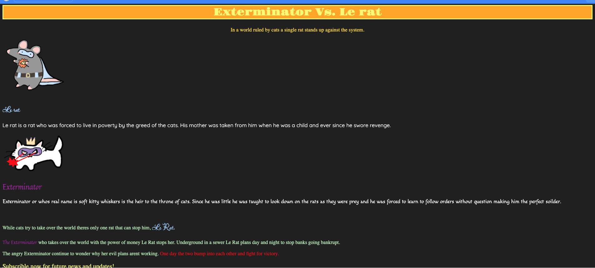

For context we were told to make an interactive project or game where the player would have to make choices and those said choices would lead to a certain path and so on. I was parnered with y classmate named anthony and before hand we had to put ideas in a google froms and send it to the teacher and then he would pair us from said ideas for example me and my parner had the same idea on what to makw the story of the game about so we were paired and this is how our project started.
the story we taught in making is a replica from a game and anime me and my parner saw named cyberpunk and the whole gmse follows a guy who woke up in a bar like in the game and then he needs to go to the bartneder and ask for information that will lead him on a path to gain information on his mission and when he finished gaining info the player will go on said mission and will defeat the main villian of the story.
Some challenges i faced when doing this was in linking the files because in some of the endings you would die and i would try to link a file to the you died file but when i tested it i would get an error because it was the wrong path so i tried a vierity of things still nothing so i asked a friend and he explained that what i was doing was wrong and he gave me tips so when i tried it again with this new info it worked and i was able to continue.Major takeaways is how to communicate because me and my partner had some disagreements in the project and seprate ideas so we talked on how to either mix our ideas or which one was better and we worked things out so i learned how to communicate with others.
give our game a try